Historia de la Minería
El Pozo Sotón no es solo una mina, es el corazón de la historia industrial asturiana. Sus galerías narran décadas de esfuerzo, tecnología y vida subterránea.
Ubicado en el Valle del Nalón, representa uno de los pocos pozos que permite visitas al interior, manteniendo viva la memoria del carbón.
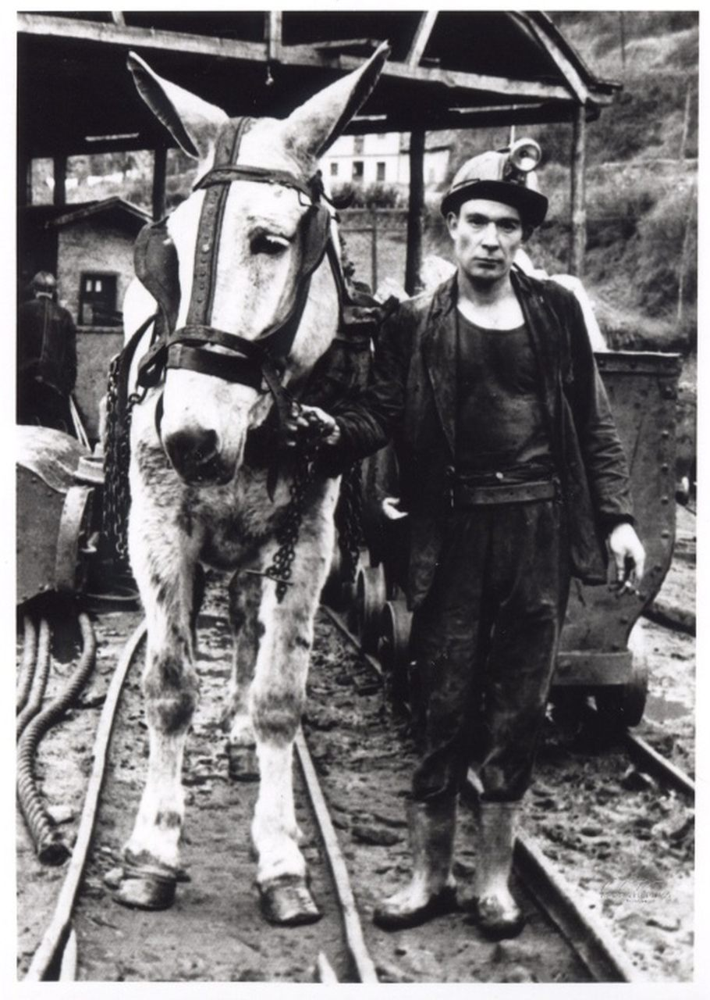
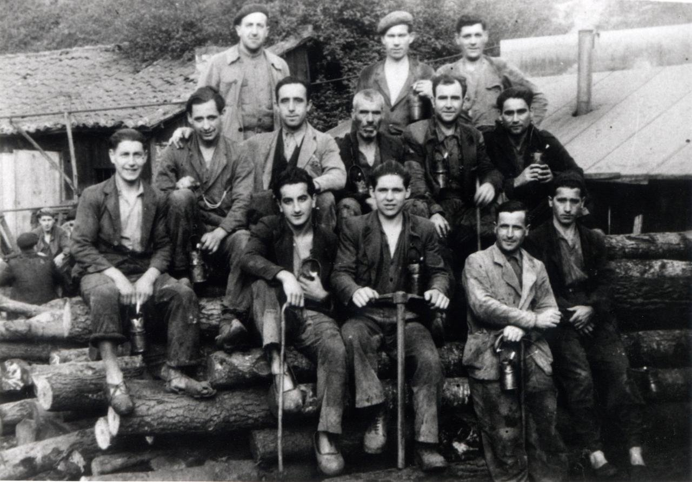
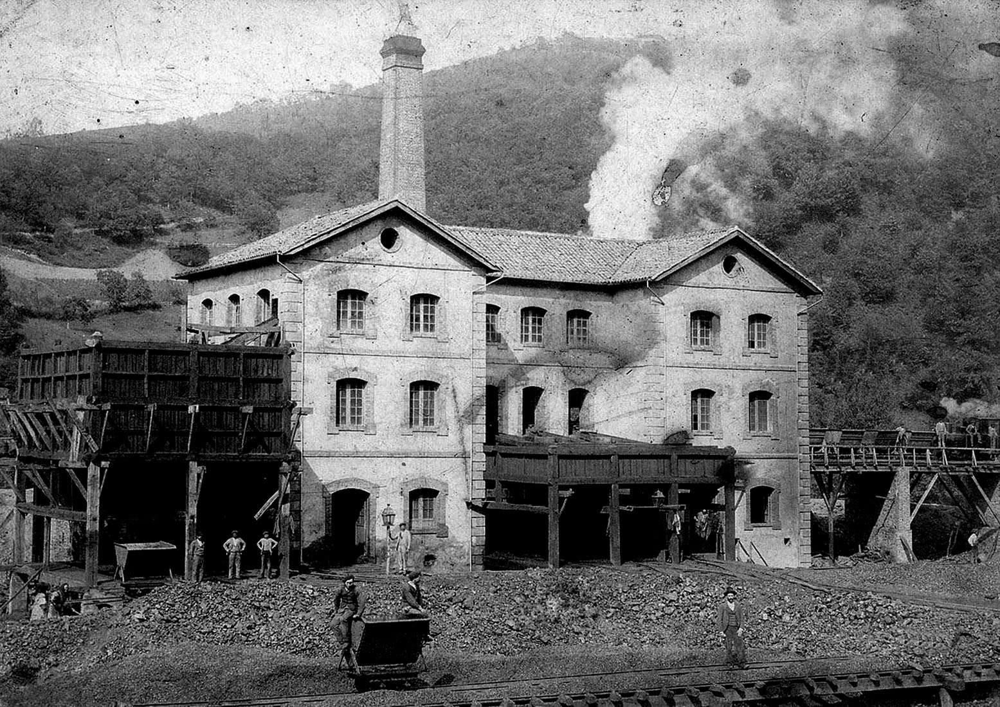
Interior de las Galerías
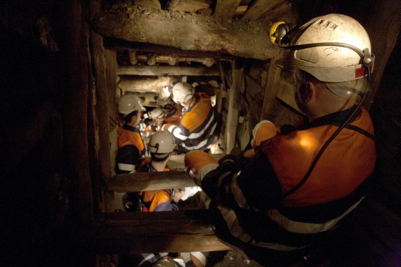
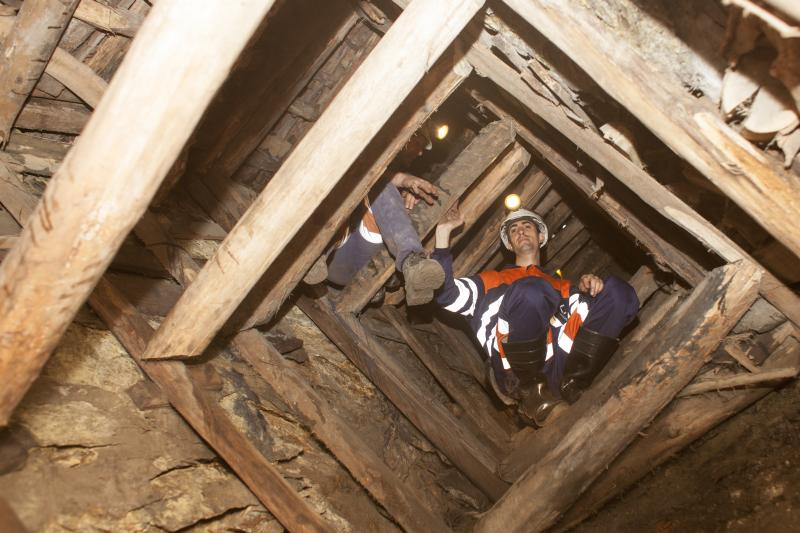
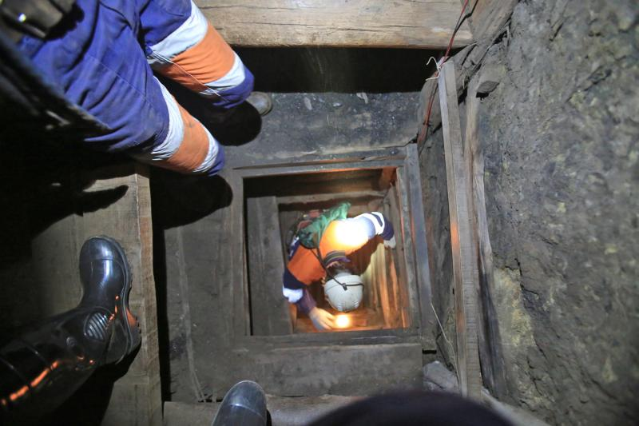
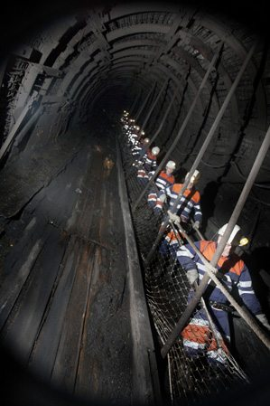
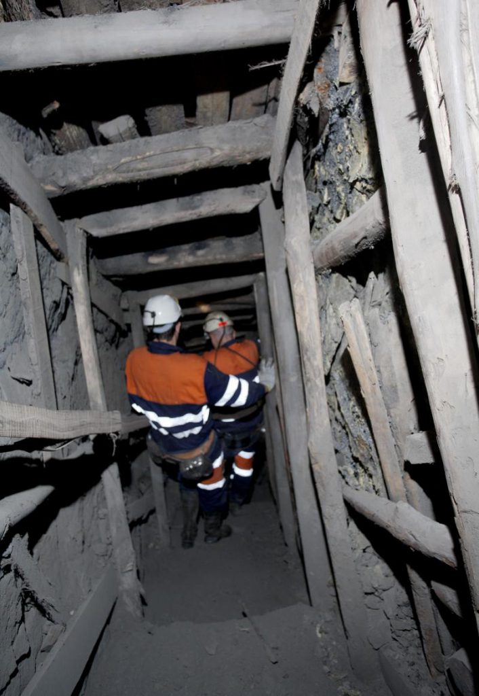
Prepara tu Visita
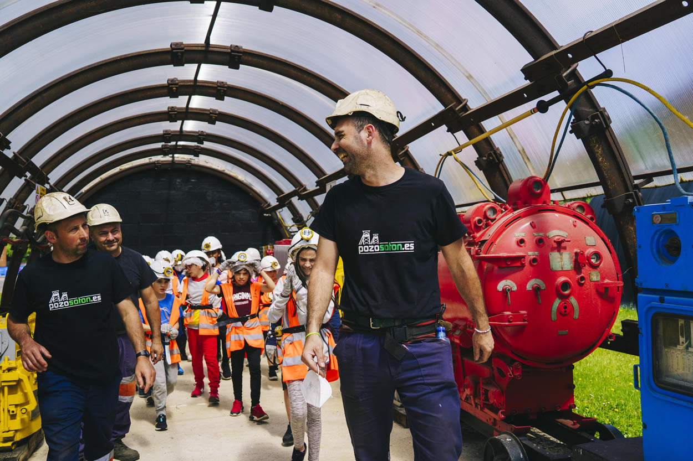
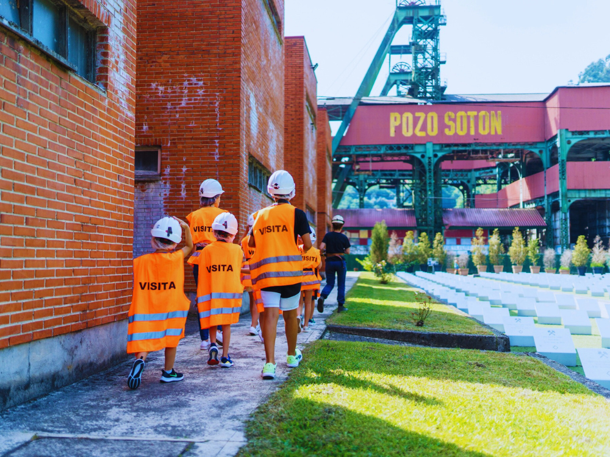
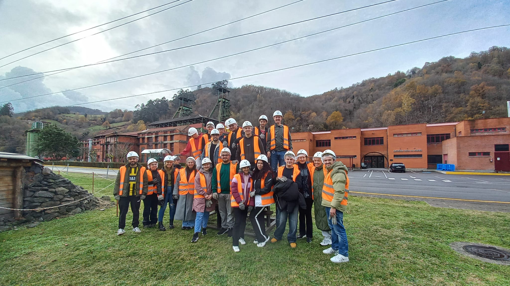
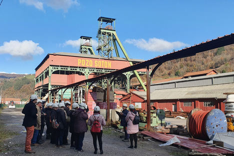